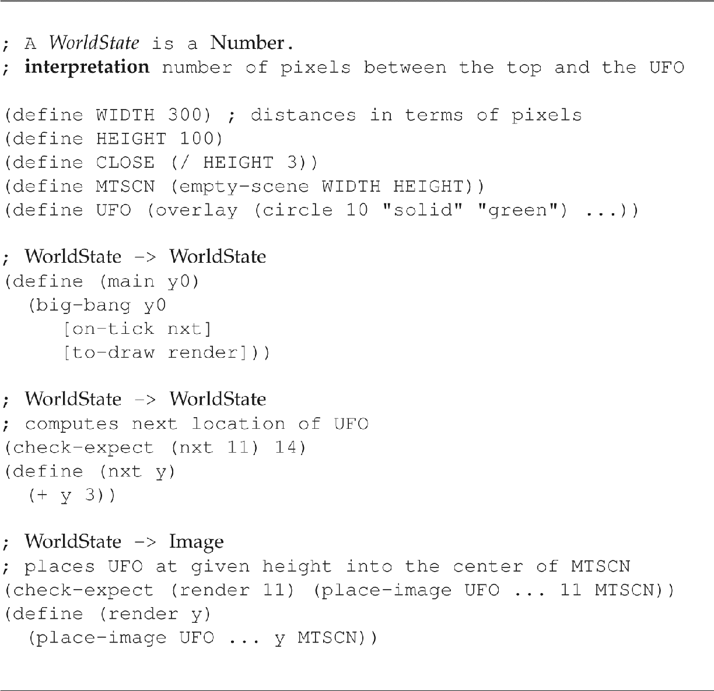
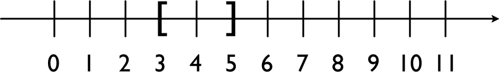
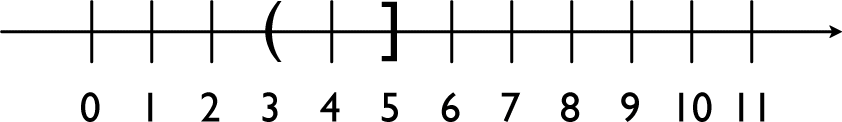
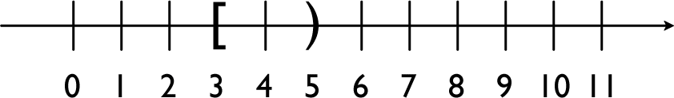
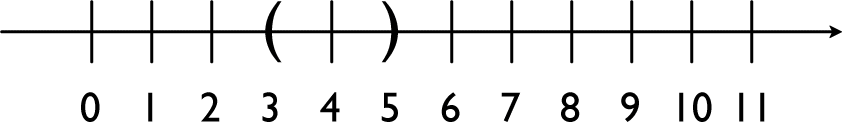
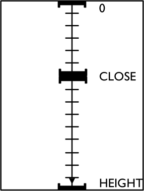
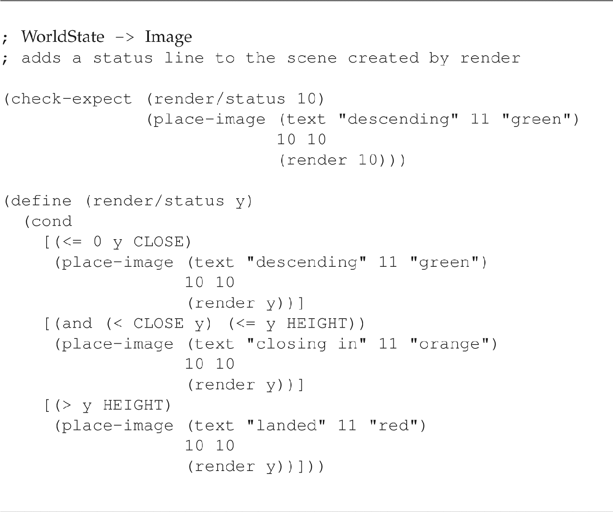
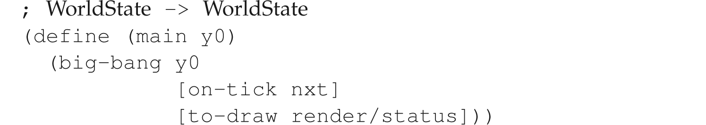
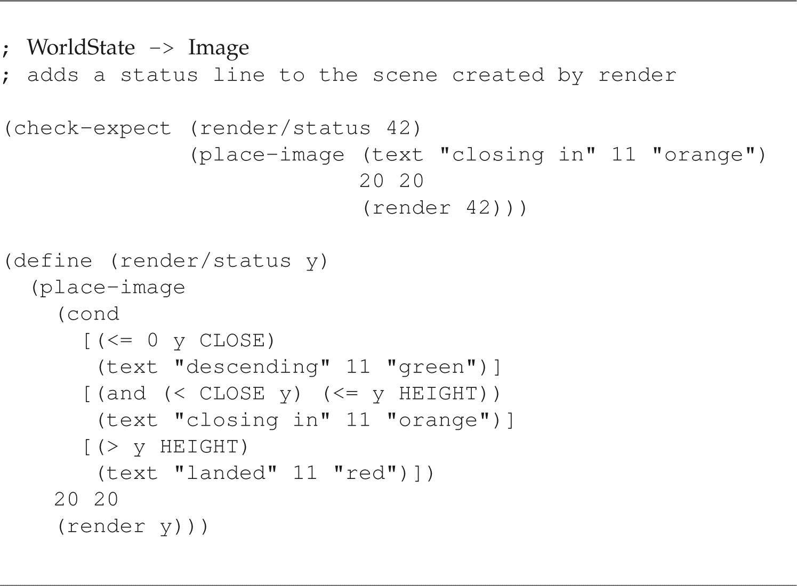

4.4 Intervals
Imagine yourself responding to the following sample design task:
Sample Problem Design a program that simulates the descent of a UFO.
After a bit of thinking, you could come up with something like figure 22. Stop! Study the definitions and replace the dots before you read on.

Figure 22: UFO, descending
Before you release this “game” program, however, you may wish to add the display of the status line to the canvas:
Sample Problem Add a status line. It says “descending” when the UFO’s height is above one third of the height of the canvas. It switches to "closing in" below that. And finally, when the UFO has reached the bottom of the canvas, the status notifies the player that the UFO has “landed.”
You are free to use appropriate colors for the status line.
In this case, we don’t have a finite enumeration of distinct elements or distinct sub-classes of data. After all, conceptually, the interval between 0 and HEIGHT (for some number greater than 0) contains an infinite number of numbers and a large number of integers. Therefore we use intervals to superimpose some organization on the generic data definition, which just uses “numbers” to describe the class of coordinates.
An interval is a description of a class of numbers via boundaries. The simplest interval has two boundaries: left and right. If the left boundary is to be included in the interval, we say it is closed on the left. Similarly, a right-closed interval includes its right boundary. Finally, if an interval does not include a boundary, it is said to be open at that boundary.
Pictures of, and notations for, intervals use brackets for closed boundaries and parentheses for open boundaries. Here are four such intervals:
• [3,5] is a closed interval:

• (3,5] is a left-open interval:

• [3,5) is a right-open interval:

• and (3,5) is an open interval:

Exercise 52. Which integers are contained in the four intervals above? 
The interval concept helps us formulate a data definition that captures the revised problem statement better than the “numbers”-based definition:
; A WorldState falls into one of three intervals:
; -- between 0 and CLOSE
; -- between CLOSE and HEIGHT
; -- below HEIGHT
Specifically, there are three intervals, which we may picture as follows:

What you see is the standard number line, turned vertical and broken into intervals. Each interval starts with an angular downward-pointing bracket () and ends with an upward-pointing bracket (). The picture identifies three intervals in this manner:
• the upper interval goes from 0 to CLOSE;
• the middle one starts at CLOSE and reaches HEIGHT; and
• the lower, invisible interval is just a single line at HEIGHT.
On a plain number line, the last interval starts at HEIGHT and goes on forever.
Visualizing the data definition in this manner helps with the design of functions in two ways. First, it immediately suggests how to pick examples. Clearly we want the function to work inside of all the intervals, and we want the function to work properly at the ends of each interval. Second, the image tells us that we need to formulate a condition that determines whether or not some “point” is within one of the intervals.
Putting the two together also raises a question, namely, how exactly the function deals with the end points. In the context of our example, two points on the number line belong to two intervals: CLOSE belongs to both the upper interval and the middle one, while HEIGHT seems to fall into both the middle one and the lowest one. Such overlaps usually cause problems for programs, and they ought to be avoided.
BSL functions avoid them naturally due to the way cond expressions are evaluated. Consider this natural organization of a function that consumes elements of WorldState:
; WorldState -> WorldState
(define (f y)
(cond
[(<= 0 y CLOSE) …]
[(<= CLOSE y HEIGHT) …]
[(>= y HEIGHT) …]))
The three cond lines correspond to the three intervals. Each condition identifies those values of y that are in between the limits of the intervals. Due to the way cond lines are checked one by one, however, a y value of CLOSE makes BSL pick the first cond line, and a y value of HEIGHT triggers the evaluation of the second ResultExpression.
If we wanted to make this choice obvious and immediate for every reader of our code, we would use different conditions:
; WorldState -> WorldState
(define (g y)
(cond
[(<= 0 y CLOSE) …]
[(and (< CLOSE y) (<= y HEIGHT)) …]
[(> y HEIGHT) …]))
Note how the second cond line uses and to combine a strictly-less check with a less-than-or-equal check instead of f’s <= with three arguments.
Given all that, we can complete the definition of the function that adds the requested status line to our UFO animation; see figure 23 for the complete definition. The function uses a cond expression to distinguish the three intervals. In each cond clause, the ResultExpression uses render (from figure 22) to create the image with the descending UFO and then places an appropriate text at position (10,10) with place-image.

Figure 23: Rendering with a status line
To run this version, you need to change main from figure 22 a bit:

One aspect of this function definition might disturb you, and to clarify why, let’s refine the sample problem from above just a tiny bit:
Sample Problem Add a status line, positioned at (20,20), that says “descending” when the UFO’s height is above one third of the height of the canvas. ⋯
This could be the response of a client who has watched your animation for a first time.
At this point, you have no choice but to change the function render/status at six distinct places because you have three copies of one external piece of information: the location of the status line. To avoid multiple changes for a single element, programmers try to avoid copies. You have two choices to fix this problem. The first one is to use constant definitions, which you might recall from early chapters. The second one is to think of the cond expression as an expression that may appear anywhere in a function, including in the middle of some other expression; see figure 24 and compare with figure 23. In this revised definition of render/status, the cond expression is the first argument to place-image. As you can see, its result is always a text image that is placed at position (20,20) into the image created by (render y).

Figure 24: Rendering with a status line, revised